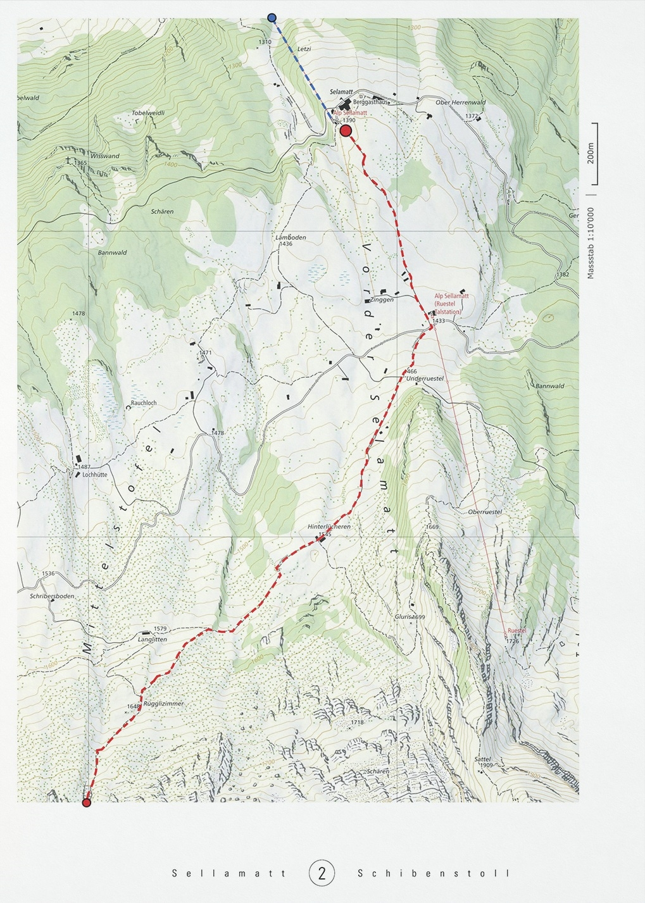
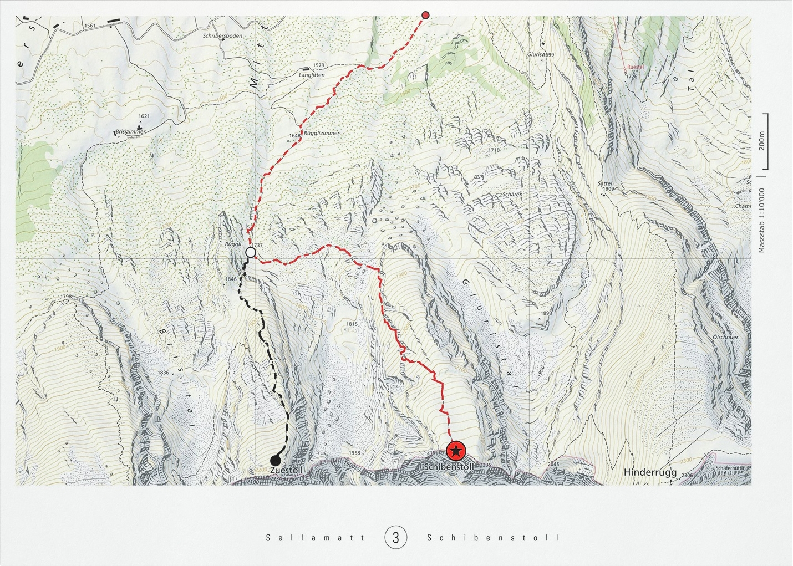
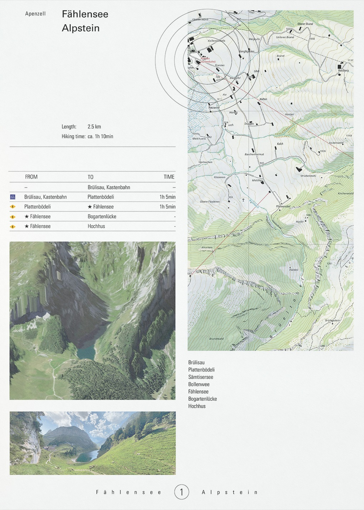
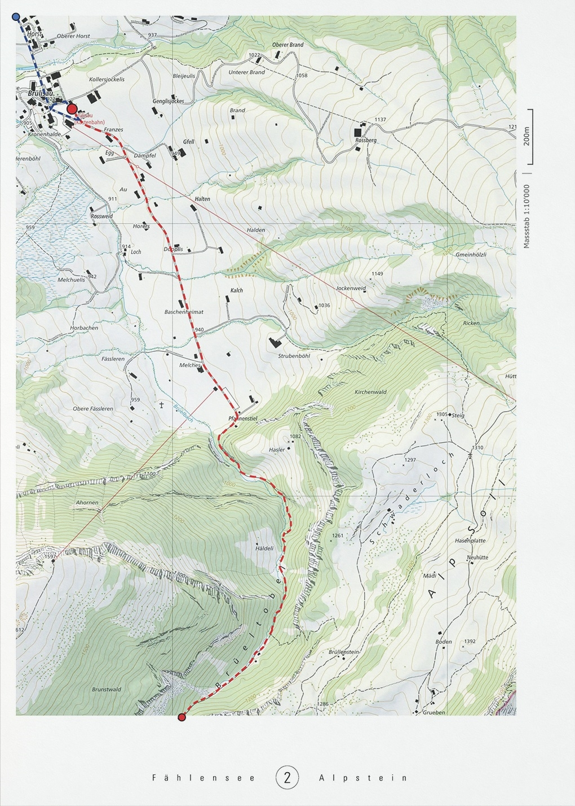
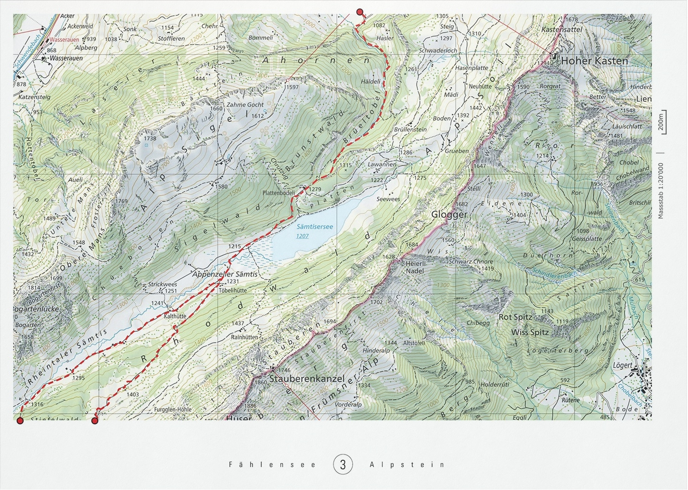
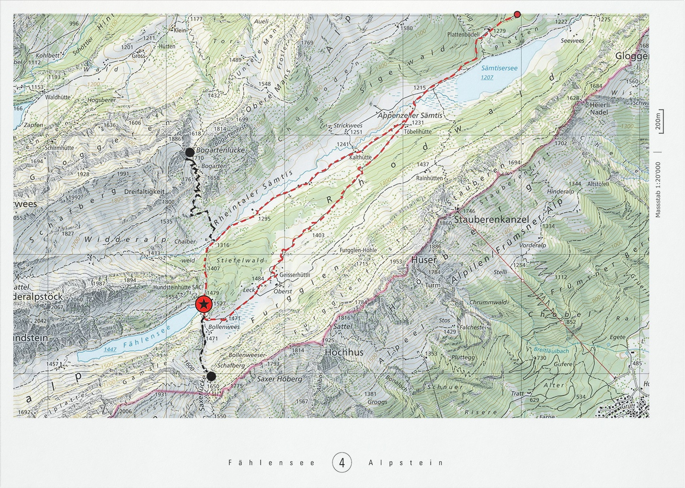

Visual travel guide
Type
Graphic design
Year
2024
Several pages that visualize a set hiking path as well as some alternative routes and destinations to two
different places
located in the region of eastern
Switzerland. (St. Gallen and Apenzell)






